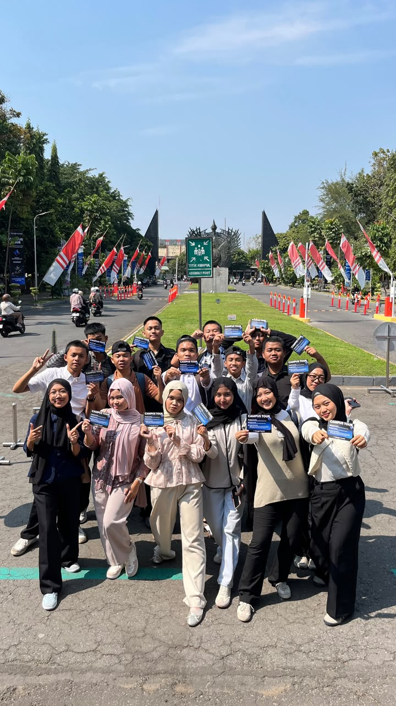
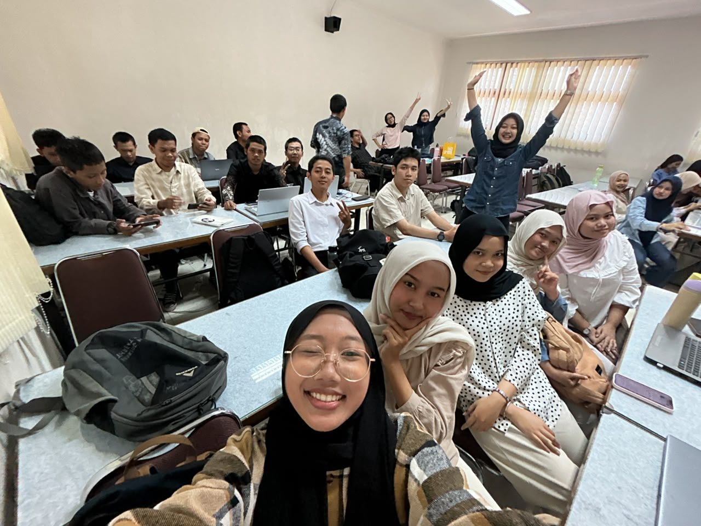
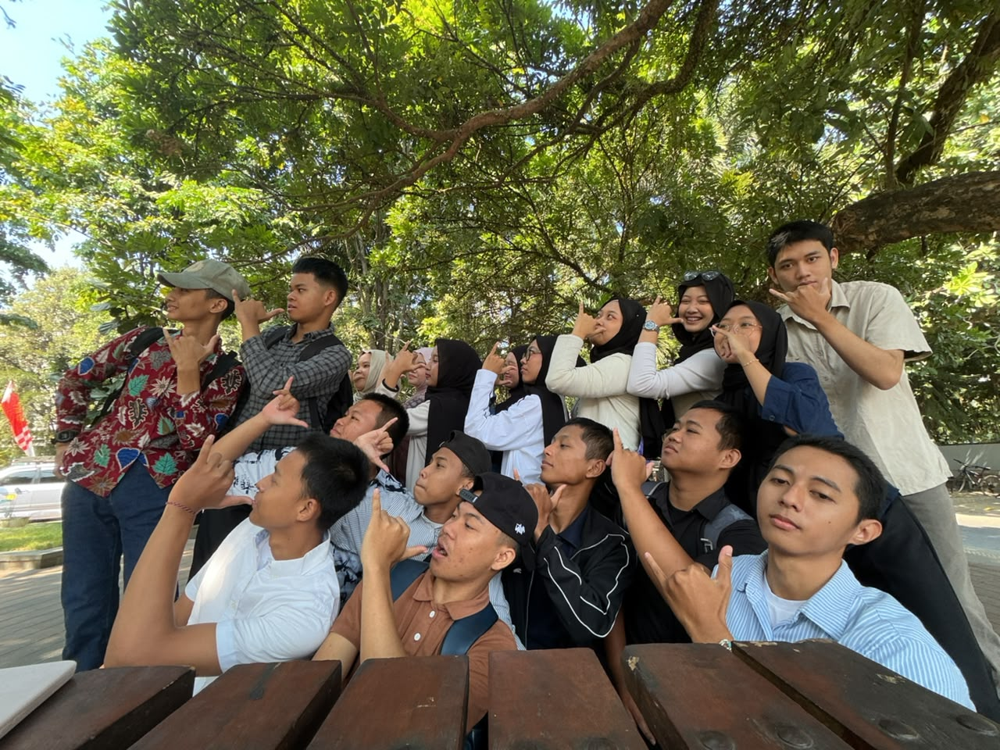
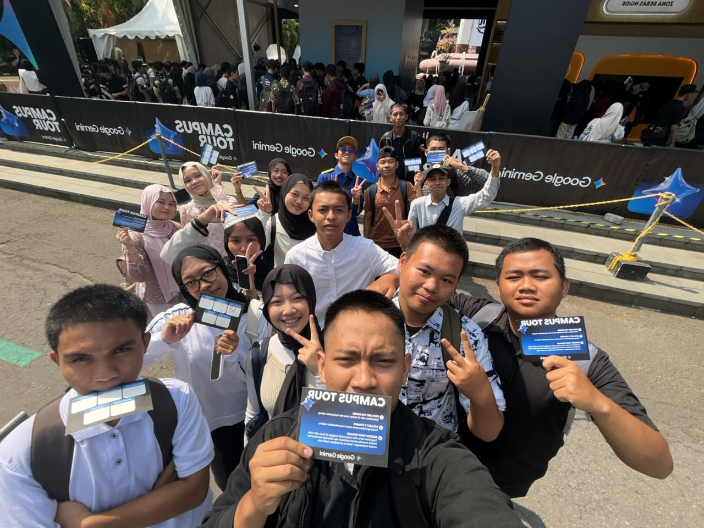
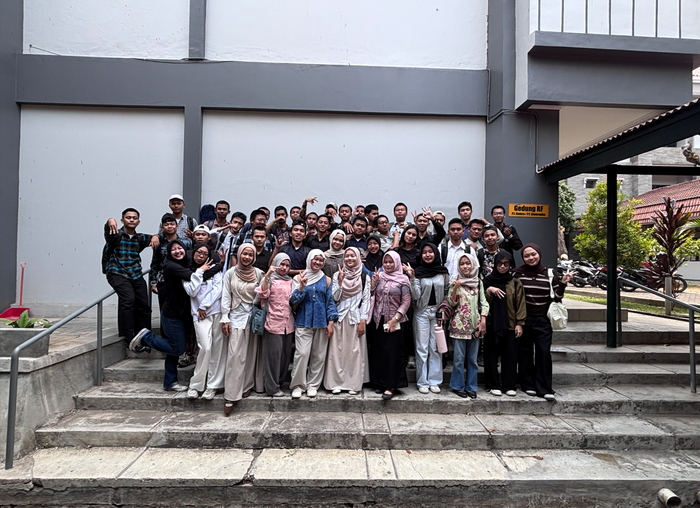
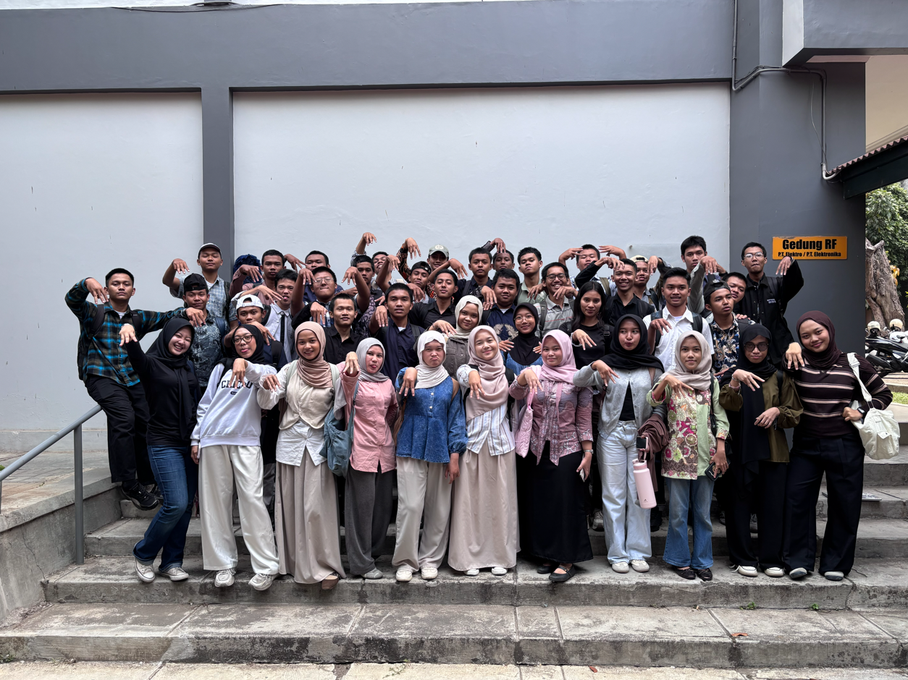

TEKNOLOGI
INFORMASI
Software Engineering • Universitas Negeri Yogyakarta. Wadah sinergi, eksplorasi teknologi modern, dan kebersamaan tanpa batas mahasiswa Kelas M.
Dedikasi, Solidaritas & Inovasi
Mengenal lebih dekat lingkungan belajar dan dinamika mahasiswa S1 Teknologi Informasi Kelas M UNY.
Selamat datang di portal resmi Teknologi Informasi Kelas M Universitas Negeri Yogyakarta. Kami adalah sekumpulan calon software engineer, pengembang sistem, dan inovator digital yang berdedikasi tinggi, kompak, serta siap menjawab tantangan revolusi industri teknologi di masa depan.
Dengan semangat kolaborasi tim dan kreativitas tanpa henti, kami terus mengasah keahlian pemrograman, logika komputasi, dan kecerdasan analitis untuk menghasilkan karya yang bermanfaat nyata bagi masyarakat.
Creative Software Engineering
Fokus mendalam pada rekayasa perangkat lunak modern dan arsitektur sistem.
Kolaboratif & Kompak
Saling mendukung dalam kegiatan akademik, praktikum, dan proyek pengembangan.
Galeri Kelas M
Koleksi potret dokumentasi kegiatan belajar, diskusi proyek, dan kehangatan persahabatan kami di kampus UNY.






Media Sosial Resmi
Ikuti kegiatan, konten kreatif, dan update terbaru seputar kelas kami melalui berbagai platform berikut.
Struktur Kelas & Penanggung Jawab
Daftar koordinator dan Penanggung Jawab (PJ) mata kuliah yang siap membantu kelancaran proses perkuliahan.
Penanggung Jawab (PJ) Mata Kuliah
Kolom Komentar & Diskusi
Sampaikan pendapat, saran, atau berinteraksi langsung melalui forum kelas ini. Data tersimpan secara aman dalam database.
Tulis Komentar
Kirimkan saran & pendapat Anda
Mini Game: Tic-Tac-Toe
Lepaskan penat setelah praktikum coding dengan bermain mini-game sederhana bersama teman kelas!